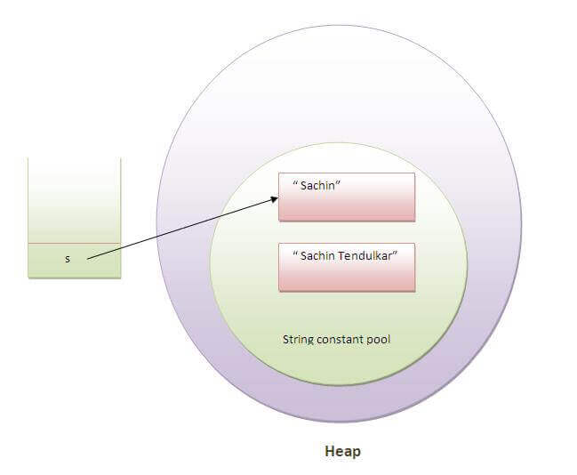
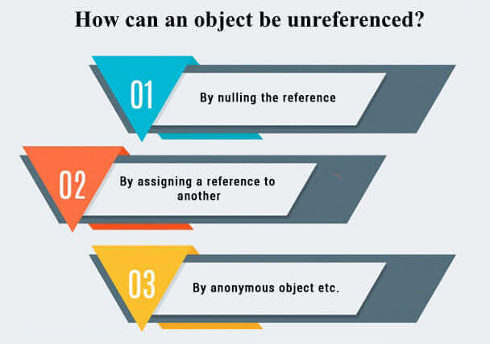
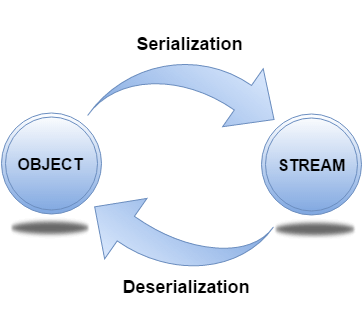

<!DOCTYPE html>
<html lang="en">

</html>
<html>

<head>
    <meta charset="UTF-8">
    <meta http-equiv="X-UA-Compatible" content="IE=edge">
    <title>Java Interview Questions | 4 | -Interview of Geeks</title>

    <!-- Css -->
    <link rel="favicon icon" href="favicon.png">
    <link rel="stylesheet" href="../style/style.css">
    <link href="https://cdn.jsdelivr.net/npm/bootstrap@5.0.0-beta2/dist/css/bootstrap.min.css" rel="stylesheet"
        integrity="sha384-BmbxuPwQa2lc/FVzBcNJ7UAyJxM6wuqIj61tLrc4wSX0szH/Ev+nYRRuWlolflfl" crossorigin="anonymous">

    <!-- Scripts -->
    <script src="https://code.jquery.com/jquery-3.2.1.slim.min.js"></script>
    <script src="https://cdn.jsdelivr.net/npm/bootstrap@5.0.0-beta2/dist/js/bootstrap.bundle.min.js"
        integrity="sha384-b5kHyXgcpbZJO/tY9Ul7kGkf1S0CWuKcCD38l8YkeH8z8QjE0GmW1gYU5S9FOnJ0"
        crossorigin="anonymous"></script>

    <!-- Meta Tags -->
    <meta name="keywords"
        content="interviewofgeeks, interview of geeks, interview preperation, interview questions, interview, java, core java,  string literial, string, string buffer, StringBuffer, string builder, StringBuilder, immutable, tostring, chararray, nested class, interface, inner class, exception, garbage collection, final, finalize, finally, io">
    <meta name="author" content="Ajay Kumar">
    <meta name="description"
        content="java, core java,  string literial, string, string buffer, StringBuffer, string builder, StringBuilder, immutable, tostring, chararray, nested class, interface, inner class, exception, garbage collection, final, finalize, finally, io">
    <meta name="viewport" content="width=device-width, initial-scale=1.0">

    <!-- Global site tag (gtag.js) - Google Analytics -->
    <script data-ad-client="ca-pub-4645356742269640" async
        src="https://pagead2.googlesyndication.com/pagead/js/adsbygoogle.js"></script>
    <script async src="https://www.googletagmanager.com/gtag/js?id=G-ZX3ZK4E5HC"></script>
    <script>
        window.dataLayer = window.dataLayer || [];
        function gtag() { dataLayer.push(arguments); }
        gtag('js', new Date());

        gtag('config', 'G-ZX3ZK4E5HC');
    </script>

    <style>
        body {
            font-family: 'Open Sans', sans-serif;
            background-color: rgb(250, 250, 250);
            overflow-x: hidden;
        }
    </style>


</head>
<!-- Header -->

<body>

    <div class="">
        <nav class="navbar bg-white" id="siteloog">
            <a href="../index.html"><span class="navbar-brand mb-0 h1"></span></a>
        </nav>
        <!-- Header Menu -->
        <nav class="navbar navbar-expand-lg navbar-light bg-white">
            <button class="navbar-toggler" type="button" data-toggle="collapse" data-target="#navbarNav"
                aria-controls="navbarNav" aria-expanded="false" aria-label="Toggle navigation">
                <span class="navbar-toggler-icon"></span>
            </button>
            <div class="collapse navbar-collapse" id="navbarNav">
                <ul class="navbar-nav">
                    <li class="nav-item ">
                        <a class="nav-link" href="../index.html">Home</a>
                    </li>
                    <li class="nav-item">
                        <a class="nav-link" href="data-structure.html">Data Structure</a>
                    </li>
                    <li class="nav-item">
                        <a class="nav-link" href="algorithm.html">Algorithm</a>
                    </li>
                    <li class="nav-item">
                        <a class="nav-link" href="company-interview.html">Company Interview</a>
                    </li>
                    <li class="nav-item">
                        <a class="nav-link" href="technical-interview.html">Technical Interview</a>
                    </li>
                    <li class="nav-item">
                        <a class="nav-link" href="web-interview.html">Web Interview</a>
                    </li>
                    <li class="nav-item">
                        <a class="nav-link active" href="java-interview.html">Java Interview</a>
                    </li>
                    <li class="nav-item">
                        <a class="nav-link" href="database-interview.html">Data Base Interview</a>
                    </li>
                    <li class="nav-item">
                        <a class="nav-link" href="python-interview.html">Python Interview</a>
                    </li>
                </ul>
            </div>
        </nav>

        <!-- Main div -->
        <div class="container  ">
            <div class="row" style="margin-top: 25px;">
                <div class="col-md-8 bg-white shadow-sm">
                    <span>
                        <h4 class="hm-welcome">Core java Interview Questions Interview Questions | 4</h4>
                    </span><span>151-200 out of 300 Questions</span>

                    <hr class="divider">
                    <p class="read-para">There is the list of 300 core Java interview questions. If there is any
                        core Java interview
                        question that has been asked to you, kindly post it in the ask question section. We assure
                        that you will get here the 90% frequently asked interview questions and answers. <br><br> The
                        answers to the Core Java interview questions are short and to the point. The core Java
                        interview questions are categorized in Basics of Java interview questions, OOPs interview
                        questions, String Handling interview questions, Multithreading interview questions,
                        collection interview questions, JDBC interview questions, etc.</p>
                    <br>
                    <div>
                        <nav aria-label="...">
                            <ul class="pagination justify-content-center">
                                <li class="page-item">
                                    <a class="page-link" href="java-interview.html">1</a>
                                </li>
                                <li class="page-item  ">
                                    <a class="page-link" href="java-interview-2.html">2</a>
                                </li>
                                <li class="page-item">
                                    <a class="page-link" href="java-interview-3.html">3</a>
                                </li>
                                <li class="page-item active">
                                    <a class="page-link" href="java-interview-4.html">4<span
                                            class="sr-only">(current)</span></a>
                                </li>
                                <li class="page-item">
                                    <a class="page-link" href="java-interview-5.html">5</a>
                                </li>
                                <li class="page-item">
                                    <a class="page-link" href="java-interview-6.html">6</a>
                                </li>
                            </ul>
                        </nav>
                    </div>

                    <div>
                        <ol class="qa-list" id="javabasicquestions">
                            <li>
                                <h5 class="question">151. Why are the objects immutable in java?</h5>
                                <p class="read-para">Because Java uses the concept of the string literal. Suppose there
                                    are five reference variables, all refer to one object "sachin". If one reference
                                    variable changes the value of the object, it will be affected by all the reference
                                    variables. That is why string objects are immutable in java.
                                </p>
                                
                                <hr>
                            </li>

                            <li>
                                <h5 class="question">152. How many ways can we create the string object?</h5>
                                <ol class="read-para">
                                    <li>String Literal <br><br>
                                        Java String literal is created by using double quotes. For Example: <br><br>
                                        <code>
                                            String s="welcome"; 
                                        </code><br><br>
                                        Each time you create a string literal, the JVM checks the "string constant pool"
                                        first. If the string already exists in the pool, a reference to the pooled
                                        instance is returned. If the string doesn't exist in the pool, a new string
                                        instance is created and placed in the pool. String objects are stored in a
                                        special memory area known as the string constant pool For example: <br><br>
                                        <code>
                                            String s1="Welcome";  <br>
                                            String s2="Welcome";//It doesn't create a new instance  
                                        </code>
                                    </li>
                                    <li>By new keyword<br><br>
                                        <code>
                                            String s=new String("Welcome");//creates two objects and one reference variable  
                                        </code><br><br>
                                        In such case, JVM will create a new string object in normal (non-pool) heap
                                        memory, and the literal "Welcome" will be placed in the constant string pool.
                                        The variable s will refer to the object in a heap (non-pool).
                                    </li>
                                </ol>
                                <hr>
                            </li>

                            <li>
                                <h5 class="question">153. How many objects will be created in the following code?</h5>
                                <code>
                                    String s1="Welcome"; <br> 
                                    String s2="Welcome";  <br>
                                    String s3="Welcome";
                                </code>
                                <p class="read-para">Only one object will be created using the above code because
                                    strings in Java are immutable.</p>
                                <hr>
                            </li>

                            <li>
                                <h5 class="question">154. Why java uses the concept of the string literal?</h5>
                                <p class="read-para">To make Java more memory efficient (because no new objects are
                                    created if it exists already in the string constant pool).
                                </p>
                                <hr>
                            </li>

                            <li>
                                <h5 class="question">155. How many objects will be created in the following code?</h5>
                                <code>
                                    String s = new String("Welcome");  
                                </code>
                                <p class="read-para">Two objects, one in string constant pool and other in
                                    non-pool(heap).</p>
                                <hr>
                            </li>

                            <li>
                                <h5 class="question">156. What is the output of the following Java program?</h5>

                                <code>
                                    public class Test   <br>
  <br>
                                    public static void main (String args[])  <br>
                                    {  <br>
                                        String a = new String("Sharma is a good player");  <br>
                                        String b = "Sharma is a good player";  <br>
                                        if(a == b)  <br>
                                        {  <br>
                                            System.out.println("a == b");  <br>
                                        }  <br>
                                        if(a.equals(b))  <br>
                                        {  <br>
                                            System.out.println("a equals b");  <br>
                                        }  <br>
                                    }
                                </code>
                                <p class="read-para" style="font-style:italic;">Output</p>
                                <code>a equals b
                                </code>
                                <hr>
                            </li>

                            <li>
                                <h5 class="question">157. What is the output of the following Java program?</h5>
                                <code>
                                    public class Test   <br>
{  <br>
    public static void main (String args[])  <br>
    {  <br>
        String s1 = "Sharma is a good player"; <br> 
        String s2 = new String("Sharma is a good player");  <br>
        s2 = s2.intern();  <br>
        System.out.println(s1 ==s2);  <br>
    }  <br>
}
                                </code>
                                <p class="read-para" style="font-style:italic;">Output</p>
                                <code>true
                                </code>
                                <hr>
                            </li>

                            <li>
                                <h5 class="question">158. What are the differences between String and StringBuffer?
                                </h5>
                                <p class="read-para">The differences between the String and StringBuffer is given in the
                                    table below.
                                </p>
                                <table class="table">
                                    <thead class="thead-dark read-para">
                                        <tr>
                                            <th scope="col" style="width: 50%;">String</th>
                                            <th scope="col" style="width: 50%;">StringBuffer
                                            </th>
                                        </tr>
                                    </thead>
                                    <tbody class="read-para">
                                        <tr>
                                            <td>1) The String class is immutable.</td>
                                            <td>The StringBuffer class is mutable.</td>
                                        </tr>
                                        <tr>
                                            <td>2) The String is slow and consumes more memory when you concat too many
                                                strings because every time it creates a new instance.</td>
                                            <td>The StringBuffer is fast and consumes less memory when you cancat
                                                strings.</td>
                                        </tr>
                                        <tr>
                                            <td>3) The String class overrides the equals() method of Object class. So
                                                you can compare the contents of two strings by equals() method.</td>
                                            <td>The StringBuffer class doesn't override the equals() method of Object
                                                class.</td>
                                        </tr>
                                    </tbody>
                                </table>
                                <hr>
                            </li>

                            <li>
                                <h5 class="question">159. What are the differences between StringBuffer and
                                    StringBuilder?</h5>
                                <p class="read-para">The differences between the StringBuffer and StringBuilder is given
                                    below.</p>
                                <table class="table">
                                    <thead class="thead-dark read-para">
                                        <tr>
                                            <th scope="col" style="width: 50%;">StringBuffer</th>
                                            <th scope="col" style="width: 50%;">StringBuilder</th>
                                        </tr>
                                    </thead>
                                    <tbody class="read-para">
                                        <tr>
                                            <td>1) StringBuffer is synchronized, i.e., thread safe. It means two threads
                                                can't call the methods of StringBuffer simultaneously.</td>
                                            <td>StringBuilder is non-synchronized,i.e., not thread safe. It means two
                                                threads can call the methods of StringBuilder simultaneously.</td>
                                        </tr>
                                        <tr>
                                            <td>2) StringBuffer is less efficient than StringBuilder.</td>
                                            <td>StringBuilder is more efficient than StringBuffer.</td>
                                        </tr>
                                    </tbody>
                                </table>
                                <hr>
                            </li>

                            <li>
                                <h5 class="question">160. How can we create an immutable class in Java?</h5>
                                <p class="read-para">We can create an immutable class by defining a final class having
                                    all of its members as final. Consider the following example.</p>
                                <code>
                                    public final class Employee{  <br>
                                        final String pancardNumber;<br>  
                                          <br>
                                        public Employee(String pancardNumber){  <br>
                                        this.pancardNumber=pancardNumber;  <br>
                                        }  <br>
                                          <br>
                                        public String getPancardNumber(){ <br> 
                                        return pancardNumber;  <br>
                                        }  <br>
                                          <br>
                                        }
                                </code>
                                <hr>
                            </li>

                            <li>
                                <h5 class="question">161. What is the purpose of toString() method in Java?</h5>
                                <p class="read-para">The toString() method returns the string representation of an
                                    object. If you print any object, java compiler internally invokes the toString()
                                    method on the object. So overriding the toString() method, returns the desired
                                    output, it can be the state of an object, etc. depending upon your implementation.
                                    By overriding the toString() method of the Object class, we can return the values of
                                    the object, so we don't need to write much code. Consider the following example.</p>
                                <code>
                                    class Student{  <br>
                                        int rollno;  <br>
                                        String name; <br> 
                                        String city; <br> 
                                         <br>
                                        Student(int rollno, String name, String city){  <br>
                                        this.rollno=rollno;  <br>
                                        this.name=name;  <br>
                                        this.city=city;  <br>
                                        }  <br>
                                          <br>
                                        public String toString(){//overriding the toString() method  <br>
                                         return rollno+" "+name+" "+city;  <br>
                                        }  <br>
                                        public static void main(String args[]){  <br>
                                          Student s1=new Student(101,"Raj","lucknow");  <br>
                                          Student s2=new Student(102,"Vijay","ghaziabad");  <br>
                                            <br>
                                          System.out.println(s1);//compiler writes here s1.toString()  <br>
                                          System.out.println(s2);//compiler writes here s2.toString()  <br>
                                        }  <br>
                                       }
                                </code>

                                <p class="read-para" style="font-style:italic;">Output</p>
                                <code>101 Raj lucknow <br>
                                    102 Vijay ghaziabad</code>
                                <hr>
                            </li>

                            <li>
                                <h5 class="question">162. Why CharArray() is preferred over String to store the
                                    password?</h5>
                                <p class="read-para">
                                    String stays in the string pool until the garbage is collected. If we store the
                                    password into a string, it stays in the memory for a longer period, and anyone
                                    having the memory-dump can extract the password as clear text. On the other hand,
                                    Using CharArray allows us to set it to blank whenever we are done with the password.
                                    It avoids the security threat with the string by enabling us to control the memory.
                                </p>
                                <hr>
                            </li>

                            <li>
                                <h5 class="question">163. Write a Java program to count the number of words present in a
                                    string?</h5>
                                <p class="read-para">
                                    <span>Program:</span>
                                </p>
                                <code>
                                    public class Test <br>  
                                    {  <br>
                                        public static void main (String args[]) <br>
                                        {  <br>
                                            String s = "Sharma is a good player and he is so punctual";  <br>
                                            String words[] = s.split(" ");  <br>
                                            System.out.println("The Number of words present in the string are : "+words.length);  <br>
                                        }  <br>
                                    }
                                </code>
                                <p class="read-para" style="font-style:italic;">Output</p>
                                <code>The Number of words present in the string are : 10</code>
                                <hr>
                            </li>

                            <li>
                                <h5 class="question">164. Name some classes present in java.util.regex package.</h5>
                                <p class="read-para">There are the following classes and interfaces present in
                                    java.util.regex package.</p>
                                <ul class="read-para">
                                    <li>MatchResult Interface</li>
                                    <li>Matcher class</li>
                                    <li>Pattern class</li>
                                    <li>PatternSyntaxException class</li>
                                </ul>
                                <hr>
                            </li>

                            <li>
                                <h5 class="question">165. How the metacharacters are different from the ordinary
                                    characters?</h5>
                                <p class="read-para">Metacharacters have the special meaning to the regular expression
                                    engine. The metacharacters are ^, $, ., *, +, etc. The regular expression engine
                                    does not consider them as the regular characters. To enable the regular expression
                                    engine treating the metacharacters as ordinary characters, we need to escape the
                                    metacharacters with the backslash.</p>
                                <hr>
                            </li>

                            <li>
                                <h5 class="question">166. Write a regular expression to validate a password. A password
                                    must start with an alphabet and followed by alphanumeric characters; Its length must
                                    be in between 8 to 20.</h5>
                                <p class="read-para">The regular expression for the above criteria will be:<span>
                                        ^[a-zA-Z][a-zA-Z0-9]{8,19}</span> where ^ represents the start of the regex,
                                    [a-zA-Z] represents that the first character must be an alphabet, [a-zA-Z0-9]
                                    represents the alphanumeric character, {8,19} represents that the length of the
                                    password must be in between 8 and 20.</p>
                                <hr>
                            </li>

                            <li>
                                <h5 class="question">167. What is the output of the following Java program?</h5>
                                <code>
                                    import java.util.regex.*;  <br>
                                    class RegexExample2{  <br>
                                    public static void main(String args[]){  <br>
                                    System.out.println(Pattern.matches(".s", "as")); //line 4  <br>
                                    System.out.println(Pattern.matches(".s", "mk")); //line 5  <br> 
                                    System.out.println(Pattern.matches(".s", "mst")); //line 6  <br>
                                    System.out.println(Pattern.matches(".s", "amms")); //line 7  <br>
                                    System.out.println(Pattern.matches("..s", "mas")); //line 8  <br>
                                    }}   
                                </code>
                                <p class="read-para" style="font-style:italic;">Output</p>
                                <code>true <br>
                                    false <br>
                                    false<br>
                                    false <br>
                                    true</code>
                                <hr>
                            </li>

                            <div style="width: 100%; height: 40px; background-color: green;"
                                id="javainheritancequestions">
                                <h5 style="color: white; margin: auto; padding: auto; text-align: center;">
                                    Core Java: Nested classes and Interfaces Interview Questions
                                </h5>
                            </div><br>

                            <li>
                                <h5 class="question">168. What are the advantages of Java inner classes?</h5>
                                <p class="read-para">There are two types of advantages of Java inner classes.</p>
                                <ul class="read-para">
                                    <li>Nested classes represent a special type of relationship that is it can access
                                        all the members (data members and methods) of the outer class including private.
                                    </li>
                                    <li>Nested classes are used to develop a more readable and maintainable code because
                                        it logically groups classes and interfaces in one place only.</li>
                                    <li class="read-para"><span>Code Optimization: </span>It requires less code to
                                        write.</li>
                                </ul>
                                </ul>
                                <hr>
                            </li>

                            <li>
                                <h5 class="question">169. What is a nested class?</h5>
                                <p class="read-para">The nested class can be defined as the class which is defined
                                    inside another class or interface. We use the nested class to logically group
                                    classes and interfaces in one place so that it can be more readable and
                                    maintainable. A nested class can access all the data members of the outer class
                                    including private data members and methods. The syntax of the nested class is
                                    defined below.</p>
                                <code>
                                    class Java_Outer_class{   <br> 
                                        //code    <br>
                                        class Java_Nested_class{ <br>   
                                         //code    <br>
                                        }    <br>
                                       }
                                </code>
                                <hr>
                            </li>

                            <li>
                                <h5 class="question">170. What are the disadvantages of using inner classes?</h5>
                                <p class="read-para">There are the following main disadvantages of using inner classes.
                                </p>
                                <ul class="read-para">
                                    <li>Inner classes increase the total number of classes used by the developer and
                                        therefore increases the workload of JVM since it has to perform some routine
                                        operations for those extra classes which result in slower performance.</li>
                                    <li>IDEs provide less support to the inner classes as compare to the top level
                                        classes and therefore it annoys the developers while working with inner classes.
                                    </li>
                                </ul>
                                <hr>
                            </li>

                            <li>
                                <h5 class="question">171. What are the types of inner classes (non-static nested class)
                                    used in Java?</h5>
                                <p class="read-para">There are mainly three types of inner classes used in Java.</p>
                                <table class="table">
                                    <thead class="thead-dark read-para">
                                        <tr>
                                            <th scope="col" style="width: 25%;">Type</th>
                                            <th scope="col" style="width: 75%;">Description</th>
                                        </tr>
                                    </thead>
                                    <tbody class="read-para">
                                        <tr>
                                            <td>1) Member Inner Class</td>
                                            <td>A class created within class and outside method.</td>
                                        </tr>
                                        <tr>
                                            <td>2) Anonymous Inner Class</td>
                                            <td>A class created for implementing an interface or extending class. Its
                                                name is decided by the java compiler.
                                            </td>
                                        </tr>
                                        <tr>
                                            <td>3) Local Inner Class</td>
                                            <td>A class created within the method.</td>
                                        </tr>
                                    </tbody>
                                </table>
                                <hr>
                            </li>

                            <li>
                                <h5 class="question">172. Is there any difference between nested classes and inner
                                    classes?</h5>
                                <p class="read-para">Yes, inner classes are non-static nested classes. In other words,
                                    we can say that inner classes are the part of nested classes.</p>
                                <hr>
                            </li>

                            <li>
                                <h5 class="question">173. Can we access the non-final local variable, inside the local
                                    inner class?</h5>
                                <p class="read-para">No, the local variable must be constant if you want to access it in
                                    the local inner class.
                                </p>
                                <hr>
                            </li>
                            <li>
                                <h5 class="question">174. How many class files are created on compiling the OuterClass
                                    in the following program?</h5>
                                <code>
                                    public class Person {  <br>
                                        String name, age, address;  <br>
                                        class Employee{  <br>
                                          float salary=10000;  <br>
                                        }  <br>
                                        class BusinessMen{  <br>
                                          final String gstin="£4433drt3$";  <br> 
                                        }  <br>
                                        public static void main (String args[])  <br>
                                        {  <br>
                                          Person p = new Person();  <br>
                                        }  <br>
                                        }
                                </code>
                                <p class="read-para">3 class-files will be created named as Person.class,
                                    Person$BusinessMen.class, and Person$Employee.class.</p>
                                <hr>
                            </li>

                            <li>
                                <h5 class="question">175. What are anonymous inner classes?</h5>
                                <p class="read-para">Anonymous inner classes are the classes that are automatically
                                    declared and instantiated within an expression. We cannot apply different access
                                    modifiers to them. Anonymous class cannot be static, and cannot define any static
                                    fields, method, or class. In other words, we can say that it a class without the
                                    name and can have only one object that is created by its definition. Consider the
                                    following example.</p>
                                <code>
                                        abstract class Person{  <br>
                                            abstract void eat(); <br> 
                                          }  <br>
                                          class TestAnonymousInner{<br>
                                           public static void main(String args[]){<br>
                                            Person p=new Person(){  <br>
                                            void eat(){System.out.println("nice fruits");}  <br>
                                            };  <br>
                                            p.eat();  <br>
                                           }  <br>
                                          }
                                    </code>
                                <p class="read-para" style="font-style:italic;">Output</p>
                                <code>nice fruits</code><br> <br>
                                <p class="read-para">Consider the following example for the working of the anonymous
                                    class using interface.</p>
                                <code>
                                        interface Eatable{  <br>
                                            void eat();  <br>
                                           }  <br>
                                           class TestAnnonymousInner1{ <br> 
                                            public static void main(String args[]){  <br>
                                            Eatable e=new Eatable(){  <br>
                                             public void eat(){System.out.println("nice fruits");}  <br>
                                            };  <br>
                                            e.eat();  <br>
                                            }  <br>
                                           }
                                    </code>
                                <p class="read-para" style="font-style:italic;">Output</p>
                                <code>nice fruits</code><br>
                                <hr>
                            </li>

                            <li>
                                <h5 class="question">176. What is the nested interface?</h5>
                                <p class="read-para">An Interface that is declared inside the interface or class is
                                    known as the nested interface. It is static by default. The nested interfaces are
                                    used to group related interfaces so that they can be easy to maintain. The external
                                    interface or class must refer to the nested interface. It can't be accessed
                                    directly. The nested interface must be public if it is declared inside the interface
                                    but it can have any access modifier if declared within the class. The syntax of the
                                    nested interface is given as follows.</p>
                                <code>
                                        interface interface_name{   <br> 
                                            ...    <br>
                                            interface nested_interface_name{ <br>   
                                             ...    <br>
                                            }   <br> 
                                           }   
                                    </code>
                                <hr>
                            </li>

                            <li>
                                <h5 class="question">177. Can a class have an interface?</h5>
                                <p class="read-para">Yes, an interface can be defined within the class. It is called a
                                    nested interface.</p>
                                <hr>
                            </li>


                            <li>
                                <h5 class="question">178. Can an Interface have a class?</h5>
                                <p class="read-para">Yes, they are static implicitly.</p>
                                <hr>
                            </li>
                            <div style="width: 100%; height: 40px; background-color: green;" id="javaoppsquestions">
                                <h5 style="color: white; margin: auto; padding: auto; text-align: center;">
                                    Java: Exception Handling Interview Questions
                                </h5>
                            </div><br>

                            <li>
                                <h5 class="question">179. What is Garbage Collection?</h5>
                                <p class="read-para">Garbage collection is a process of reclaiming the unused runtime
                                    objects. It is performed for memory management. In other words, we can say that It
                                    is the process of removing unused objects from the memory to free up space and make
                                    this space available for Java Virtual Machine. Due to garbage collection java gives
                                    0 as output to a variable whose value is not set, i.e., the variable has been
                                    defined but not initialized. For this purpose, we were using free() function in the
                                    C language and delete() in C++. In Java, it is performed automatically. So, java
                                    provides better memory management.
                                </p>
                                <hr>
                            </li>

                            <li>
                                <h5 class="question">180. What is gc()?</h5>
                                <p class="read-para">The gc() method is used to invoke the garbage collector for cleanup
                                    processing. This method is found in System and Runtime classes. This function
                                    explicitly makes the Java Virtual Machine free up the space occupied by the unused
                                    objects so that it can be utilized or reused. Consider the following example for the
                                    better understanding of how the gc() method invoke the garbage collector.</p>
                                <code>
                                        public class TestGarbage1{  <br>
                                            public void finalize(){System.out.println("object is garbage collected");}  <br>
                                            public static void main(String args[]){  <br>
                                             TestGarbage1 s1=new TestGarbage1();  <br>
                                             TestGarbage1 s2=new TestGarbage1();  <br>
                                             s1=null;  <br>
                                             s2=null;  <br>
                                             System.gc();  <br>
                                            }  <br>
                                           } 
                                    </code>
                                <p class="read-para" style="font-style:italic;">Output</p>
                                <code>object is garbage collected <br>
                                    object is garbage collected</code><br>
                                <hr>
                            </li>


                            <li>
                                <h5 class="question">181. How is garbage collection controlled?</h5>
                                <p class="read-para">Garbage collection is managed by JVM. It is performed when there is
                                    not enough space in the memory and memory is running low. We can externally call the
                                    System.gc() for the garbage collection. However, it depends upon the JVM whether to
                                    perform it or not.</p>
                                <hr>
                            </li>

                            <li>
                                <h5 class="question">182. How can an object be unreferenced?</h5>
                                <p class="read-para">There are many ways:</p>
                                <ul class="read-para">
                                    <li>By nulling the reference</li>
                                    <li>By assigning a reference to another</li>
                                    <li>By anonymous object etc.</li>
                                </ul>
                                 <br><br>

                                <ol class="read-para">
                                    <li>By nulling a reference: <br><br> <code>
                                        Employee e=new Employee();  <br>
e=null;  
                                    </code></li><br>
                                    <li>By assigning a reference to another: <br><br> <code>
                                        Employee e1=new Employee();  <br>
Employee e2=new Employee();  <br>
e1=e2;//now the first object referred by e1 is available for garbage collection
                                    </code></li> <br>
                                    <li>By anonymous object:<br><br> <code>
                                        new Employee();  
                                    </code></li>

                                </ol>
                                <hr>
                            </li>

                            <li>
                                <h5 class="question">183. What is the purpose of the finalize() method?</h5>
                                <p class="read-para">The finalize() method is invoked just before the object is garbage
                                    collected. It is used to perform cleanup processing. The Garbage collector of JVM
                                    collects only those objects that are created by new keyword. So if you have created
                                    an object without new, you can use the finalize method to perform cleanup processing
                                    (destroying remaining objects). The cleanup processing is the process to free up all
                                    the resources, network which was previously used and no longer needed. It is
                                    essential to remember that it is not a reserved keyword, finalize method is present
                                    in the object class hence it is available in every class as object class is the
                                    superclass of every class in java. Here, we must note that neither finalization nor
                                    garbage collection is guaranteed. Consider the following example.
                                </p>
                                <code>
                                    public class FinalizeTest {  <br>
                                        int j=12;  <br>
                                        void add()  <br>
                                        {  <br>
                                            j=j+12;  <br>
                                            System.out.println("J="+j); <br> 
                                        }  <br>
                                        public void finalize()  <br>
                                        {  <br>
                                            System.out.println("Object is garbage collected");  <br>
                                        }  <br>
                                        public static void main(String[] args) {  <br>
                                            new FinalizeTest().add();  <br>
                                            System.gc();  <br>
                                            new FinalizeTest().add();  <br>
                                        }  <br>
                                    } 
                                </code>
                                <hr>
                            </li>

                            <li>
                                <h5 class="question">184. Can an unreferenced object be referenced again?</h5>
                                <p class="read-para">Yes,</p>
                                <hr>
                            </li>

                            <li>
                                <h5 class="question">185.What kind of thread is the Garbage collector thread?</h5>
                                <p class="read-para">Daemon thread.</p>
                                <hr>
                            </li>

                            <li>
                                <h5 class="question">186. What is the difference between final, finally and finalize?
                                </h5>
                                <table class="table">
                                    <thead class="thead-dark read-para">
                                        <tr>
                                            <th scope="col" style="width: 33%;">final</th>
                                            <th scope="col" style="width: 33%;">finally</th>
                                            <th scope="col" style="width: 33%;">finalize</th>
                                        </tr>
                                    </thead>
                                    <tbody class="read-para">
                                        <tr>
                                            <td>1) Final is used to apply restrictions on class, method, and variable.
                                                The final class can't be inherited, final method can't be overridden,
                                                and final variable value can't be changed.</td>
                                            <td>Finally is used to place important code, it will be executed whether an
                                                exception is handled or not.</td>
                                            <td>Finalize is used to perform clean up processing just before an object is
                                                garbage collected.</td>
                                        </tr>
                                        <tr>
                                            <td>2) Final is a keyword.</td>
                                            <td>Finally is a block.</td>
                                            <td>Finalize is a method.</td>
                                        </tr>
                                    </tbody>
                                </table>
                                <hr>
                            </li>

                            <li>
                                <h5 class="question">187. What is the purpose of the Runtime class?</h5>

                                <p class="read-para">Java Runtime class is used to interact with a java runtime
                                    environment. Java Runtime
                                    class provides methods to execute a process, invoke GC, get total and free memory,
                                    etc. There is only one instance of java.lang.Runtime class is available for one java
                                    application. The Runtime.getRuntime() method returns the singleton instance of
                                    Runtime class.</p>
                                <hr>
                            </li>

                            <li>
                                <h5 class="question">188. How will you invoke any external process in Java?</h5>
                                <p class="read-para">By Runtime.getRuntime().exec(?) method. Consider the following
                                    example.</p>
                                <code>
                                    public class Runtime1{  <br>
                                        public static void main(String args[])throws Exception{  <br>
                                         Runtime.getRuntime().exec("notepad");//will open a new notepad  <br>
                                        }  <br>
                                       } 
                                </code>
                                <hr>
                            </li>
                            <div style="width: 100%; height: 40px; background-color: green;"
                                id="javainheritancequestions">
                                <h5 style="color: white; margin: auto; padding: auto; text-align: center;">
                                    I/O Interview Questions
                                </h5>
                            </div><br>

                            <li>
                                <h5 class="question">189. Give the hierarchy of InputStream and OutputStream classes.
                                </h5>
                                <br>
                                <p class="read-para"><span>OutputStream Hierarchy</span></p>
                                <br><br>
                                <p class="read-para"><span>InputStream Hierarchy</span></p>
                                
                                <hr>
                            </li>

                            <li>
                                <h5 class="question">190. What do you understand by an IO stream?</h5>
                                <p class="read-para">The stream is a sequence of data that flows from source to
                                    destination. It is composed of bytes. In Java, three streams are created for us
                                    automatically.</p>
                                <ul class="read-para">
                                    <li>System.out: standard output stream</li>
                                    <li>System.in: standard input stream</li>
                                    <li>System.err: standard error stream</li>
                                </ul>
                                <hr>
                            </li>


                            <li>
                                <h5 class="question">191. What is the difference between the Reader/Writer class
                                    hierarchy and the InputStream/OutputStream class hierarchy?</h5>
                                <p class="read-para">The Reader/Writer class hierarchy is character-oriented, and the
                                    InputStream/OutputStream class hierarchy is byte-oriented. The ByteStream classes
                                    are used to perform input-output of 8-bit bytes whereas the CharacterStream classes
                                    are used to perform the input/output for the 16-bit Unicode system. There are many
                                    classes in the ByteStream class hierarchy, but the most frequently used classes are
                                    FileInputStream and FileOutputStream. The most frequently used classes
                                    CharacterStream class hierarchy is FileReader and FileWriter.</p>
                                <hr>
                            </li>

                            <li>
                                <h5 class="question">192. What are the super most classes for all the streams?</h5>
                                <p class="read-para">All the stream classes can be divided into two types of classes
                                    that are ByteStream classes and CharacterStream Classes. The ByteStream classes are
                                    further divided into InputStream classes and OutputStream classes. CharacterStream
                                    classes are also divided into Reader classes and Writer classes. The SuperMost
                                    classes for all the InputStream classes is java.io.InputStream and for all the
                                    output stream classes is java.io.OutPutStream. Similarly, for all the reader
                                    classes, the super-most class is java.io.Reader, and for all the writer classes, it
                                    is java.io.Writer.</p>
                                <hr>
                            </li>

                            <li>
                                <h5 class="question">193. What are the FileInputStream and FileOutputStream?</h5>
                                <p class="read-para"><span>Java FileOutputStream </span>is an output stream used for
                                    writing data to a file. If you
                                    have some primitive values to write into a file, use FileOutputStream class. You can
                                    write byte-oriented as well as character-oriented data through the FileOutputStream
                                    class. However, for character-oriented data, it is preferred to use FileWriter than
                                    FileOutputStream. Consider the following example of writing a byte into a file.</p>

                                <code>
                                    import java.io.FileOutputStream;    <br>
public class FileOutputStreamExample {    <br>
    public static void main(String args[]){    <br>  
           try{      <br>
             FileOutputStream fout=new FileOutputStream("D:\\testout.txt");   <br>   
             fout.write(65);      <br>
             fout.close();      <br>
             System.out.println("success...");      <br>
            }catch(Exception e){System.out.println(e);} <br>     
      }      <br>
}
                                </code> <br>
                                <p class="read-para">Java FileInputStream class obtains input bytes from a file. It is
                                    used for reading
                                    byte-oriented data (streams of raw bytes) such as image data, audio, video, etc. You
                                    can also read character-stream data. However, for reading streams of characters, it
                                    is recommended to use FileReader class. Consider the following example for reading
                                    bytes from a file.</p>
                                <code>
                                    import java.io.FileInputStream;  <br>  
public class DataStreamExample {    <br>
     public static void main(String args[]){ <br>     
          try{      <br>
            FileInputStream fin=new FileInputStream("D:\\testout.txt");  <br>    
            int i=fin.read();    <br>
            System.out.print((char)i);      <br>
    <br>
            fin.close();      <br>
          }catch(Exception e){System.out.println(e);}  <br>    
         }      <br>
        }    
                                </code>
                                <hr>
                            </li>

                            <li>
                                <h5 class="question">194. What is the purpose of using BufferedInputStream and
                                    BufferedOutputStream classes?</h5>
                                <p class="read-para">Java BufferedOutputStream class is used for buffering an output
                                    stream. It internally uses a buffer to store data. It adds more efficiency than to
                                    write data directly into a stream. So, it makes the performance fast. Whereas, Java
                                    BufferedInputStream class is used to read information from the stream. It internally
                                    uses the buffer mechanism to make the performance fast.
                                </p>
                                <hr>
                            </li>

                            <li>
                                <h5 class="question">195. How to set the Permissions to a file in Java?</h5>
                                <p class="read-para">In Java, FilePermission class is used to alter the permissions set
                                    on a file. Java FilePermission class contains the permission related to a directory
                                    or file. All the permissions are related to the path. The path can be of two types:
                                </p>
                                <ul class="read-para">
                                    <li>D:\\IO\\-: It indicates that the permission is associated with all
                                        subdirectories and files recursively.</li>
                                    <li>D:\\IO\\*: It indicates that the permission is associated with all directory and
                                        files within this directory excluding subdirectories.</li>
                                </ul>
                                <p class="read-para">Let's see the simple example in which permission of a directory
                                    path is granted with read permission and a file of this directory is granted for
                                    write permission.</p>

                                <code>
                                        package com.javatpoint; <br> 
import java.io.*;  <br>
import java.security.PermissionCollection;  <br>
public class FilePermissionExample{  <br>
     public static void main(String[] args) throws IOException {  <br>
      String srg = "D:\\IO Package\\java.txt";  <br>
      FilePermission file1 = new FilePermission("D:\\IO Package\\-", "read");  <br>
      PermissionCollection permission = file1.newPermissionCollection();  <br>
      permission.add(file1);  <br>
           FilePermission file2 = new FilePermission(srg, "write");  <br>
           permission.add(file2);  <br>
         if(permission.implies(new FilePermission(srg, "read,write"))) {  <br>
           System.out.println("Read, Write permission is granted for the path "+srg );  <br>
             }else {  <br>
            System.out.println("No Read, Write permission is granted for the path "+srg);            }  <br>
     }   <br>
} 
                                    </code>
                                <p class="read-para" style="font-style:italic;">Output</p>
                                <code>Read, Write permission is granted for the path D:\IO Package\java.txt</code><br>
                                <hr>
                            </li>

                            <li>
                                <h5 class="question">196. What are FilterStreams?</h5>
                                <p class="read-para"><span>FilterStream classes </span>are used to add additional
                                    functionalities to
                                    the other stream classes. FilterStream classes act like an interface which read the
                                    data from a stream, filters it, and pass the filtered data to the caller. The
                                    FilterStream classes provide extra functionalities like adding line numbers to the
                                    destination file, etc.</p>
                                <hr>
                            </li>

                            <li>
                                <h5 class="question">197. What is an I/O filter?</h5>
                                <p class="read-para">An I/O filter is an object that reads from one stream and writes to
                                    another, usually altering the data in some way as it is passed from one stream to
                                    another. Many Filter classes that allow a user to make a chain using multiple input
                                    streams. It generates a combined effect on several filters.</p>
                                <hr>
                            </li>

                            <li>
                                <h5 class="question">198. In Java, How many ways you can take input from the console?
                                </h5>
                                <p class="read-para">In Java, there are three ways by using which, we can take input
                                    from the console.</p>

                                <ul class="read-para">
                                    <li class="read-para"><span>Using BufferedReader class:</span> we can take input
                                        from the console by wrapping
                                        System.in into an InputStreamReader and passing it into the BufferedReader. It
                                        provides an efficient reading as the input gets buffered. Consider the following
                                        example. <br>
                                        <code>
                                            import java.io.BufferedReader; <br>  
import java.io.IOException;   <br>
import java.io.InputStreamReader;   <br>
public class Person   <br>
{   <br>
    public static void main(String[] args) throws IOException    <br>
    {   <br>
      System.out.println("Enter the name of the person");  <br>
        BufferedReader reader = new BufferedReader(new InputStreamReader(System.in));   <br>
        String name = reader.readLine();   <br>
        System.out.println(name);           <br>
    }   <br>
}
                                        </code>

                                    </li>

                                    <li class="read-para">
                                        <span>Using Scanner class:</span> The Java Scanner class breaks the input into
                                        tokens using a
                                        delimiter that is whitespace by default. It provides many methods to read and
                                        parse various primitive values. Java Scanner class is widely used to parse text
                                        for string and primitive types using a regular expression. Java Scanner class
                                        extends Object class and implements Iterator and Closeable interfaces. Consider
                                        the following example.br <br>
                                        <code>
                                            import java.util.*;  <br>  
public class ScannerClassExample2 {      <br>
      public static void main(String args[]){       <br>                  
          String str = "Hello/This is JavaTpoint/My name is Abhishek."; <br>   
          //Create scanner with the specified String Object    <br>
          Scanner scanner = new Scanner(str);    <br>
          System.out.println("Boolean Result: "+scanner.hasNextBoolean());       <br>       
          //Change the delimiter of this scanner    <br>
          scanner.useDelimiter("/");    <br>
          //Printing the tokenized Strings    <br>
          System.out.println("---Tokenizes String---");  <br>   
        while(scanner.hasNext()){    <br>
            System.out.println(scanner.next());  <br>  
        }    <br>
          //Display the new delimiter   <br> 
          System.out.println("Delimiter used: " +scanner.delimiter());   <br>           
          scanner.close();    <br>
          }      <br>
}    
                                        </code>
                                    </li>

                                    <li class="read-para">
                                        <span> Using Console class:</span> The Java Console class is used to get input
                                        from the
                                        console. It provides methods to read texts and passwords. If you read the
                                        password using the Console class, it will not be displayed to the user. The
                                        java.io.Console class is attached to the system console internally. The Console
                                        class is introduced since 1.5. Consider the following example. <br>
                                        <code>
                                            import java.io.Console; <br>   
class ReadStringTest{    <br>  
public static void main(String args[]){   <br>   
Console c=System.console();      <br>
System.out.println("Enter your name: ");  <br>    
String n=c.readLine();      <br>
System.out.println("Welcome "+n);     <br> 
}      <br>
} 
                                        </code>
                                    </li>
                                </ul>
                                <hr>
                            </li>

                            <div style="width: 100%; height: 40px; background-color: green;" id="javaoppsquestions">
                                <h5 style="color: white; margin: auto; padding: auto; text-align: center;">
                                    Serialization Interview Questions
                                </h5>
                            </div><br>

                            <li>
                                <h5 class="question">199. What is serialization?</h5>
                                <p class="read-para">Serialization in Java is a mechanism of writing the state of an
                                    object into a byte stream. It is used primarily in Hibernate, RMI, JPA, EJB and JMS
                                    technologies. It is mainly used to travel object's state on the network (which is
                                    known as marshaling). Serializable interface is used to perform serialization. It is
                                    helpful when you require to save the state of a program to storage such as the file.
                                    At a later point of time, the content of this file can be restored using
                                    deserialization. It is also required to implement RMI(Remote Method Invocation).
                                    With the help of RMI, it is possible to invoke the method of a Java object on one
                                    machine to another machine.
                                </p>
                                
                                <hr>
                            </li>

                            <li>
                                <h5 class="question">200. How can you make a class serializable in Java?</h5>
                                <p class="read-para">A class can become serializable by implementing the Serializable
                                    interface.</p>
                                <hr>
                            </li>

                        </ol>
                        <div>
                            <nav aria-label="...">
                                <ul class="pagination justify-content-center">
                                    <li class="page-item">
                                        <a class="page-link" href="java-interview.html">1
                                        </a>
                                    </li>
                                    <li class="page-item">
                                        <a class="page-link" href="java-interview-2.html">2</a>
                                    </li>
                                    <li class="page-item">
                                        <a class="page-link" href="java-interview-3.html">3</a>
                                    </li>
                                    <li class="page-item active">
                                        <a class="page-link" href="java-interview-4.html">4<span
                                                class="sr-only">(current)</span></a>
                                    </li>
                                    <li class="page-item">
                                        <a class="page-link" href="java-interview-5.html">5</a>
                                    </li>
                                    <li class="page-item">
                                        <a class="page-link" href="java-interview-6.html">6</a>
                                    </li>
                                </ul>
                            </nav>
                        </div><br>

                        <p><span style="font-weight: bolder;">Last Updated: </span><span id="date"></span></p>
                    </div><br>

                    <!-- Trending Technology Cards -->
                    <h5 style="font-weight: bolder;">Trending Technologies Interview Questions</h5>

                    <!-- First Row -->
                    <div class="row" style="margin-top: 25px;">
                        <div class="col ">
                            <a href="ai.html" style="text-decoration: none;">
                                <div class="card">
                                    
                                    <div class="card-body">
                                        <p class="card-text">Artificial Intelegence (AI)</p>
                                    </div>
                                </div>
                            </a>
                        </div>
                        <div class="col">
                            <a href="aws.html" style="text-decoration: none;">
                                <div class="card">
                                    
                                    <div class="card-body"><br>
                                        <p class="card-text">AWS</p>
                                    </div>
                                </div>
                            </a>
                        </div>
                        <div class="col">
                            <a href="selenium.html" style="text-decoration: none;">
                                <div class="card">
                                    
                                    <div class="card-body"><br>
                                        <p class="card-text">Selenium</p>
                                    </div>
                                </div>
                            </a>
                        </div>
                        <div class="col">
                            <a href="react.html" style="text-decoration: none;">
                                <div class="card">
                                    
                                    <div class="card-body"><br>
                                        <p class="card-text">React</p>
                                    </div>
                                </div>
                            </a>
                        </div>
                    </div>

                    <!-- Second Row -->
                    <div class="row" style="margin-top: 25px;">
                        <div class="col ">
                            <a href="cloud.html" style="text-decoration: none;">
                                <div class="card">
                                    
                                    <div class="card-body"><br>
                                        <p class="card-text">Cloud</p>
                                    </div>
                                </div>
                            </a>
                        </div>
                        <div class="col">
                            <a href="hadoop.html" style="text-decoration: none;">
                                <div class="card">
                                    
                                    <div class="card-body"><br>
                                        <p class="card-text">Hadoop</p>
                                    </div>
                                </div>
                            </a>
                        </div>
                        <div class="col">
                            <a href="data-science.html" style="text-decoration: none;">
                                <div class="card">
                                    
                                    <div class="card-body"><br>
                                        <p class="card-text">Data Science</p>
                                    </div>
                                </div>
                            </a>
                        </div>
                        <div class="col">
                            <a href="angular.html" style="text-decoration: none;">
                                <div class="card">
                                    
                                    <div class="card-body"><br>
                                        <p class="card-text">Angular</p>
                                    </div>
                                </div>
                            </a>
                        </div>
                    </div>

                    <!-- Third Row -->
                    <div class="row" style="margin-top: 25px;">
                        <div class="col ">
                            <a href="block-chain.html" style="text-decoration: none;">
                                <div class="card">
                                    
                                    <div class="card-body"><br>
                                        <p class="card-text">Blockchain</p>
                                    </div>
                                </div>
                            </a>
                        </div>
                        <div class="col">
                            <a href="git.html" style="text-decoration: none;">
                                <div class="card">
                                    
                                    <div class="card-body"><br>
                                        <p class="card-text">Git</p>
                                    </div>
                                </div>
                            </a>
                        </div>
                        <div class="col">
                            <a href="ml.html" style="text-decoration: none;">
                                <div class="card">
                                    
                                    <div class="card-body"><br>
                                        <p class="card-text">Machine Learning</p>
                                    </div>
                                </div>
                            </a>
                        </div>
                        <div class="col">
                            <a href="devops.html" style="text-decoration: none;">
                                <div class="card">
                                    
                                    <div class="card-body"><br>
                                        <p class="card-text">DevOps</p>
                                    </div>
                                </div>
                            </a>
                        </div>
                    </div>

                    <br>
                </div>

                <div class="col-md-4">
                    <!-- ************************************This is Right Div ***************************************** -->
                    <div class="aside list">
                        <h3>Quick Links</h3>
                        <ul>
                            <li><a href="java-interview.html#javabasicquestions">Java Basic Interview Questions</a>
                            </li>
                            <li><a href="java-interview-2.html#javainheritancequestions">Java Inheritance
                                    Questions</a></li>
                            <li><a href="java-interview.html#javaoppsquestions">Java OOP's Interview Questions</a>
                            </li>
                            <li><a href="java-multithreading.html">Java Multithreading Questions</a></li>
                            <li><a href="java-interview.html#javastaticquestions">Java String & Exception
                                    Questions</a></li>
                            <li><a href="java-collection.html">Java Collection Interview Questions</a></li>
                            <li><a href="java-jdbc.html">JDBC Interview Questions</a></li>
                            <li><a href="java-servlet.html">Servlet Interview Questions</a></li>
                            <li><a href="java-jsp.html">JSP Interview Questions</a></li>
                            <li><a href="java-spring.html">Spring Interview Questions</a></li>
                            <li><a href="java-hibernate.html">Hibernate Interview Questions</a></li>
                        </ul>
                    </div>


                    </div>
                </div>
            </div>
        </div><br>

        <!-- Footer -->
        <div class="continer border-top">
            <div class="row bg-white">
                <div class="col">
                    <div class="navbar-brand mb-0 h1">
                        
                    </div>
                    <div>
                        <span></span>
                        <span class="footer-text"><a href="mailto:contact@interviewofgeeks.com"
                                style="text-decoration: none; color: #308D46;">conact@interviewofgeeks.com</a></span>
                    </div>
                </div>
                <div class="col">
                    <div class="footer-text">Company</div>
                    <div class="footer-link">
                        <ul>
                            <li><a href="../about-us.html">About Us</a></li>
                            <li><a href="../contact-us.html">Contact Us</a></li>
                            <li><a href="../privacy-policy.html">Privacy Policy</a></li>
                            <li><a href="../copyright-policy.html">Copyright Policy</a></li>
                        </ul>

                    </div>
                </div>
                <div class="col">
                    <div class="footer-text">Learn</div>
                    <div class="footer-link">
                        <ul>
                            <li><a href="algorithm.html">Algorithms</a></li>
                            <li><a href="data-structure.html">Data Structure</a></li>
                            <li><a href="../tutorials/tutorials.html">Languages</a></li>
                            <li><a href="java-interview.html">Java Interview</a></li>
                            <li><a href="python-interview.html">Python Interview</a></li>
                        </ul>
                    </div>
                </div>
                <div class="col">
                    <div class="footer-text">Contribute</div>
                    <div class="footer-link">
                        <ul>
                            <li><a href="../article.html">Write an Article</a></li>
                            <li><a href="../your-experience.html">Write Interview Experience</a></li>
                        </ul>
                    </div>
                </div>
            </div>
        </div>

        <div class="row" style="background-color: #308D46;"><span
                style="margin: 15px 0 15px 25px; font-size: large; font-weight: bolder;color: white;">@InterviewofGeeks,
                Some
                rights reserved.</span> </div>

        <!-- up Arrow -->
        <a href="#top" class="up-arrow">
            
        </a>

        <!-- Primary Div Ends -->
    </div>

    <script>
        $(document).ready(function () {
            // executes when HTML-Document is loaded and DOM is ready
            console.log("document is ready");


            $(".card").hover(
                function () {
                    $(this).addClass('shadow-lg').css('cursor', 'pointer');
                }, function () {
                    $(this).removeClass('shadow-lg');
                }
            );

            // document ready  
        });
    </script>
    <script>
        var date = new Date(2021, 1, 27);
        document.getElementById("date").innerHTML = date;
    </script>
    <script src=”https://www.jdoodle.com/assets/jdoodle-pym.min.js” type=”text/javascript”></script>

</body>

</html>